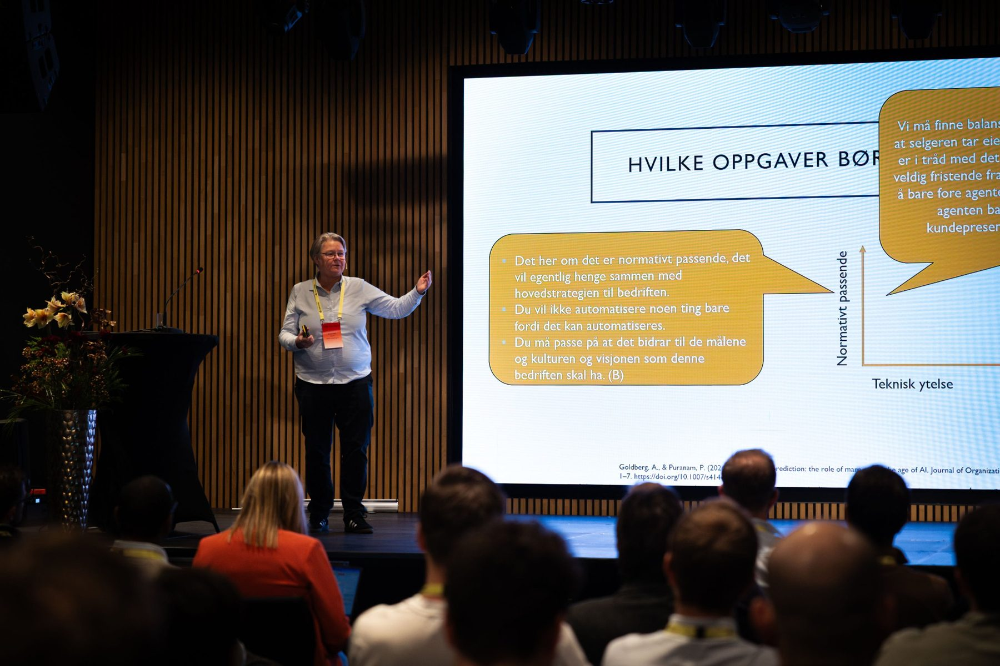
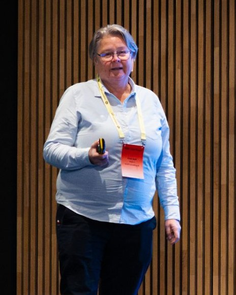

Organisasjonsdesign for mennesker og KI
Jeg hjelper ledere med å utforme organisasjoner der mennesker, data og KI virker sammen. Jeg bygger på forskning og over 25 års praktisk erfaring med smidige og datadrevne organisasjoner, for ledere som vet at mennesker er nøkkelen til endring.
Hva jeg kan hjelpe med
Når KI blir en del av arbeidet, endres det som skal koordineres: oppgaver, roller, beslutninger og ansvar. Jeg hjelper dere med å designe organisasjonen for det.
Organisasjonsdesign med KI
Hvordan bør roller, team og beslutninger organiseres når KI tar over deler av arbeidet? Jeg hjelper dere med å finne en organisering som gir både autonomi og sammenheng.
Faglig påfyll om KI og organisasjon
Foredrag og inspirasjonsdager om sosiotekniske systemer, usikkerhet og hvordan KI kan gi verdi for hele organisasjonen, ikke bare for den enkelte.
Workshops som gir retning
Fra innovasjon og datahåndtering til hvordan dere organiserer dere når KI-agenter blir en del av arbeidet. Jeg leder prosessen, så dere kan konsentrere dere om innholdet.
Endring i praksis
Prosjektledelse når ny teknologi og nye arbeidsmåter skal innføres samtidig, for eksempel et nytt ERP-system.
Nytt og oppdrag
Et utvalg av hva jeg jobber med nå og har gjort nylig. Mer underveis følger du på LinkedIn.
Foredrag
Et utvalg foredrag fra konferanser. De fleste er filmet og kan ses på Vimeo.

Digital transformasjon i organisasjoner
NTNU Handelshøyskolen. Faglærer med Xinlu Qiu; hele faget våren 2026.
Teknologibasert forretningsutvikling
Faglærer med Linn Bjerke-Busch og Torild A.W. Oddane.
Teknologiforståelse
Faglærer med Tina Bjørnevik Aune.
Endringsledelse
Gjesteforeleser.
Artikler og forskning
Jeg skriver på Medium om autonome team, uforutsigbarhet, kontroll og multiteam-systemer, sortert etter tema her. Under finner du forskningen min.
Om Wulff Consulting
Mennesker, prosesser og data, koblet sammen.
Wulff Consulting AS hjelper organisasjoner med å bli mer smidige og datadrevne ved å koble sammen mennesker, prosesser og data.
Jeg har jobbet med prosessforbedring og organisasjonsutvikling siden 1998, både som konsulent og i lederroller, blant annet i 19 år i Kantega. Siden april 2025 har jeg jobbet på heltid i eget selskap.
Rådene mine bygger på forskning. I september 2023 disputerte jeg for ph.d.-graden i organisasjonsdesign ved NTNU, Institutt for industriell økonomi og teknologiledelse (IØT), med professor Hanne Finnestrand som hovedveileder og professor Jonas A. Ingvaldsen og Marit Collin, daværende administrerende direktør i Kantega, som medveiledere. Avhandlingen heter Digital product development and organizational design: Exploring the autonomy of teams in the context of dynamic output.
Navnet har en historie. Min far, Egil Wulff, drev Wulff Consulting AS fra 2000 til 2010, og vi søsken Kristin, Charlotte og Carsten brukte selskapet som læringsarena. Femten år senere tok jeg navnet og logoen i bruk igjen.
![Den opprinnelige Wulff Consulting-logoen fra 2000, med tre blå ovaler]() Den opprinnelige logoen. De tre ovalene lever videre i den nye.
Den opprinnelige logoen. De tre ovalene lever videre i den nye.
La oss snakke sammen
Trenger dere en rådgiver, en foredragsholder eller noen til å lede en workshop? Ta kontakt, så finner vi ut av det.